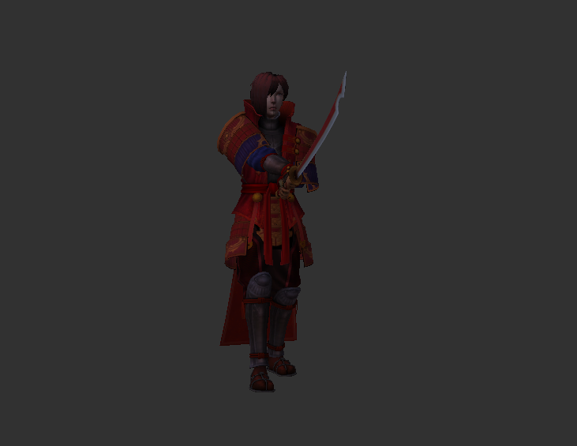

HAL9000 originally did a proof of concept for adding in custom animations through SDX. We've taken his solid base, and expanded on it, making it a bit more flexible in what it can do.

So, what can the Animation SDX mod do? It allows us to add in 3D models, and have them animated. This includes adding new zombies, NPCs, and animals into your game, using different animations than what's available in the base game.
The Animation SDX mod uses Unity calls to play various animations that you can set up in Unity. These calls do not rely on internals of the game to function, so they should be fairly resilient against changes between alphas. HAL9000's original code was built around Alpha 14.x, and still mostly works. We've updated it to work more reliably with A16.x and beyond, and made it a bit easier to use.
Created with the Personal Edition of HelpNDoc: Full-featured Help generator